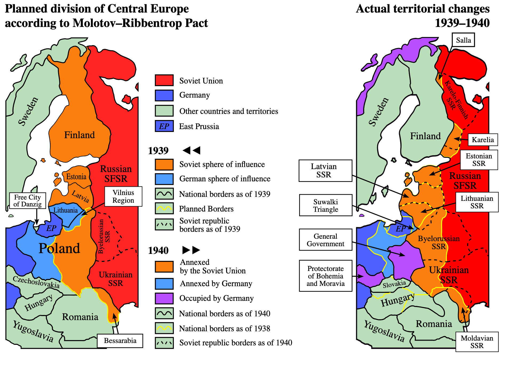

The Molotov–Ribbentrop Pact (a 10-year non-aggression treaty) of August 23, 1939, and its secret protocols constituted a major act of imperialist and colonial expansion by Nazi Germany and the Soviet Union at the expense of the sovereignty, territorial integrity, and political independence of their neighboring nations.

By dividing Eastern Europe into spheres of influence, the two totalitarian powers treated independent countries and their populations as objects of territorial redistribution, disregarding their right to self-determination. Poland was invaded one week after Molotov and Ribbentrop signed the pact. Poland was partitioned by Germany and the Soviet Union in September 1939, while the Baltic states—Estonia, Latvia, and Lithuania—were subsequently occupied and forcibly incorporated into the USSR in 1940.
Finland, whose territory Moscow sought to acquire, resisted Soviet expansion during the Winter War of 1939–1940 but was forced to surrender significant territories. These events were not simply border adjustments or conventional security arrangements: they represented an imperial project of territorial conquest, political subjugation, demographic engineering, and cultural domination. The pact thus exposed the colonial logic underlying Soviet foreign policy, demonstrating how Moscow, like other imperial powers, denied neighboring nations the right to determine their own political futures.